Install servers
Install Individuals servers for: - Nexus - Sonarqube - Jenkins
After Installing Servers
- Add Sonar security group (All Traffic) in the Jenkins server security Group in AWS Console.
- Also, Jenkins security group (All Traffic) in the Sonar server security Group in AWS Console.
Nexus
- Centos 7 (Amazon Market place)
- TCP Port 8081 from MyIP and Jenkins-SG
#!/bin/bash
yum install java-1.8.0-openjdk.x86_64 wget -y
mkdir -p /opt/nexus/
mkdir -p /tmp/nexus/
cd /tmp/nexus/
NEXUSURL="https://download.sonatype.com/nexus/3/latest-unix.tar.gz"
wget $NEXUSURL -O nexus.tar.gz
EXTOUT=`tar xzvf nexus.tar.gz`
NEXUSDIR=`echo $EXTOUT | cut -d '/' -f1`
rm -rf /tmp/nexus/nexus.tar.gz
rsync -avzh /tmp/nexus/ /opt/nexus/
useradd nexus
chown -R nexus.nexus /opt/nexus
cat <<EOT>> /etc/systemd/system/nexus.service
[Unit]
Description=nexus service
After=network.target
[Service]
Type=forking
LimitNOFILE=65536
ExecStart=/opt/nexus/$NEXUSDIR/bin/nexus start
ExecStop=/opt/nexus/$NEXUSDIR/bin/nexus stop
User=nexus
Restart=on-abort
[Install]
WantedBy=multi-user.target
EOT
echo 'run_as_user="nexus"' > /opt/nexus/$NEXUSDIR/bin/nexus.rc
systemctl daemon-reload
systemctl start nexus
systemctl enable nexus
Configure Nexus
Login:
- username: admin
- Get Password: cat /opt/nexus/sonatype-work/nexus3/admin.password
Check and start the nexus service
sudo systemctl status nexus
SonarQube
- Ubuntu VERSION="18.04"
- TCP Port 9000
- TCP Port 80 from MyIP and Jenkins-SG
Sonar Installation
Script
#!/bin/bash
cp /etc/sysctl.conf /root/sysctl.conf_backup
cat <<EOT> /etc/sysctl.conf
vm.max_map_count=262144
fs.file-max=65536
ulimit -n 65536
ulimit -u 4096
EOT
cp /etc/security/limits.conf /root/sec_limit.conf_backup
cat <<EOT> /etc/security/limits.conf
sonarqube - nofile 65536
sonarqube - nproc 409
EOT
sudo apt-get update -y
sudo apt-get install openjdk-11-jdk -y
sudo update-alternatives --config java
java -version
sudo apt update
wget -q https://www.postgresql.org/media/keys/ACCC4CF8.asc -O - | sudo apt-key add -
sudo sh -c 'echo "deb http://apt.postgresql.org/pub/repos/apt/ `lsb_release -cs`-pgdg main" >> /etc/apt/sources.list.d/pgdg.list'
sudo apt install postgresql postgresql-contrib -y
#sudo -u postgres psql -c "SELECT version();"
sudo systemctl enable postgresql.service
sudo systemctl start postgresql.service
sudo echo "postgres:admin123" | chpasswd
runuser -l postgres -c "createuser sonar"
sudo -i -u postgres psql -c "ALTER USER sonar WITH ENCRYPTED PASSWORD 'admin123';"
sudo -i -u postgres psql -c "CREATE DATABASE sonarqube OWNER sonar;"
sudo -i -u postgres psql -c "GRANT ALL PRIVILEGES ON DATABASE sonarqube to sonar;"
systemctl restart postgresql
#systemctl status -l postgresql
netstat -tulpena | grep postgres
sudo mkdir -p /sonarqube/
cd /sonarqube/
sudo curl -O https://binaries.sonarsource.com/Distribution/sonarqube/sonarqube-8.3.0.34182.zip
sudo apt-get install zip -y
sudo unzip -o sonarqube-8.3.0.34182.zip -d /opt/
sudo mv /opt/sonarqube-8.3.0.34182/ /opt/sonarqube
sudo groupadd sonar
sudo useradd -c "SonarQube - User" -d /opt/sonarqube/ -g sonar sonar
sudo chown sonar:sonar /opt/sonarqube/ -R
cp /opt/sonarqube/conf/sonar.properties /root/sonar.properties_backup
cat <<EOT> /opt/sonarqube/conf/sonar.properties
sonar.jdbc.username=sonar
sonar.jdbc.password=admin123
sonar.jdbc.url=jdbc:postgresql://localhost/sonarqube
sonar.web.host=0.0.0.0
sonar.web.port=9000
sonar.web.javaAdditionalOpts=-server
sonar.search.javaOpts=-Xmx512m -Xms512m -XX:+HeapDumpOnOutOfMemoryError
sonar.log.level=INFO
sonar.path.logs=logs
EOT
cat <<EOT> /etc/systemd/system/sonarqube.service
[Unit]
Description=SonarQube service
After=syslog.target network.target
[Service]
Type=forking
ExecStart=/opt/sonarqube/bin/linux-x86-64/sonar.sh start
ExecStop=/opt/sonarqube/bin/linux-x86-64/sonar.sh stop
User=sonar
Group=sonar
Restart=always
LimitNOFILE=65536
LimitNPROC=4096
[Install]
WantedBy=multi-user.target
EOT
systemctl daemon-reload
systemctl enable sonarqube.service
#systemctl start sonarqube.service
#systemctl status -l sonarqube.service
apt-get install nginx -y
rm -rf /etc/nginx/sites-enabled/default
rm -rf /etc/nginx/sites-available/default
cat <<EOT> /etc/nginx/sites-available/sonarqube
server{
listen 80;
server_name sonarqube.groophy.in;
access_log /var/log/nginx/sonar.access.log;
error_log /var/log/nginx/sonar.error.log;
proxy_buffers 16 64k;
proxy_buffer_size 128k;
location / {
proxy_pass http://127.0.0.1:9000;
proxy_next_upstream error timeout invalid_header http_500 http_502 http_503 http_504;
proxy_redirect off;
proxy_set_header Host \$host;
proxy_set_header X-Real-IP \$remote_addr;
proxy_set_header X-Forwarded-For \$proxy_add_x_forwarded_for;
proxy_set_header X-Forwarded-Proto http;
}
}
EOT
ln -s /etc/nginx/sites-available/sonarqube /etc/nginx/sites-enabled/sonarqube
systemctl enable nginx.service
#systemctl restart nginx.service
sudo ufw allow 80,9000,9001/tcp
echo "System reboot in 30 sec"
sleep 30
reboot
Configure Sonar
Check and start the sonarqube service
sudo systemctl status sonarqube
Login: - username: admin - Password: admin
Slack
SetUp Slack Steps: - A workspace: sosotech - Create a Channel(s): sosochannel1 - Add teammates to the channel - Add Jenkins credentials: sososlacktoken Get the Jenkins app from the : Slack App Directory
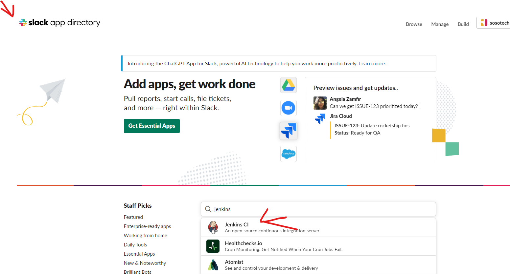
-
Add to Slack and select the channel
-
Add the CI Jenkins Integration: Im using #sosochannel1
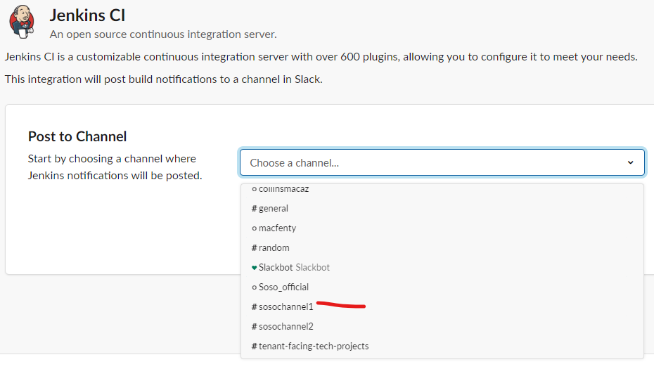
- Copy the Token in Step 3 and go create a Slack Credential In Jenkins credentials
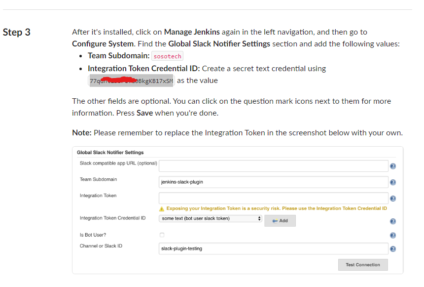
- Scroll docn and save.
- No Go to jenkins and configure credentials called: sososlacktoken
Jenkins
- Ubuntu VERSION="20.04.6 LTS
- TCP Port 8080 from Anywhere - IPv4 and IPv6
Install
If you have any issues, then: curl the IP address if you had any issues.
curl http://[your-put-IP]/latest/user-data LIKE SO: --> curl http://56.22.1.2/latest/user-data
Also refer to site to update your code: Optional-Link
Ubuntu installation script for VERSION="20.04.6 LTS
#!/bin/bash
sudo apt update
sudo apt install openjdk-11-jdk -y
sudo apt install maven -y
curl -fsSL https://pkg.jenkins.io/debian-stable/jenkins.io-2023.key | sudo tee \
/usr/share/keyrings/jenkins-keyring.asc > /dev/null
echo deb [signed-by=/usr/share/keyrings/jenkins-keyring.asc] \
https://pkg.jenkins.io/debian-stable binary/ | sudo tee \
/etc/apt/sources.list.d/jenkins.list > /dev/null
sudo apt-get update
sudo apt-get install jenkins -y
Check and start the jenkins service
sudo systemctl status jenkins
sudo systemctl status jenkins
java -version
whereis git
Get Jenkins Password
sudo cat /var/lib/jenkins/secrets/initialAdminPassword
INSTALL JDK8 On the Jenkins Server In Server terminal, Install Maven and JDK8
sudo apt update
sudo apt install openjdk-8-jdk -y
Get JDK8 Path from the Jenkins Server
CD to ROOT and Copy the java path. Copy the path in a node Path for use in Jenkins Global Tool Configuration.
/usr/lib/jvm/java-1.8.0-openjdk-amd64. See below Photo
sudo su -
ls /usr/lib/jvm

INSTALL MAVEN On the Jenkins Server Go to the Maven site and get latest version: Right-click and copy .tar link 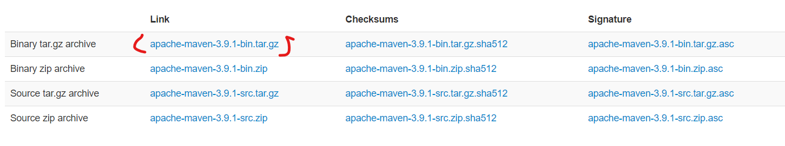
sudo su -
cd /opt
apt install wget
wget https://dlcdn.apache.org/maven/maven-3/3.9.1/binaries/apache-maven-3.9.1-bin.tar.gz
tar -xvzf apache-maven-3.9.1-bin.tar.gz
mv apache-maven-3.9.1 maven
rm -rf apache-maven-3.9.1-bin.tar.gz
cd ..
Install Docker on the Jenkins Server
see link: Reference link
sudo su -
sudo apt update -y
sudo apt-get install \
ca-certificates \
curl \
gnupg
sudo install -m 0755 -d /etc/apt/keyrings
curl -fsSL https://download.docker.com/linux/ubuntu/gpg | sudo gpg --dearmor -o /etc/apt/keyrings/docker.gpg
sudo chmod a+r /etc/apt/keyrings/docker.gpg
echo \
"deb [arch="$(dpkg --print-architecture)" signed-by=/etc/apt/keyrings/docker.gpg] https://download.docker.com/linux/ubuntu \
"$(. /etc/os-release && echo "$VERSION_CODENAME")" stable" | \
sudo tee /etc/apt/sources.list.d/docker.list > /dev/null
sudo apt-get update -y
sudo apt-get install docker-ce docker-ce-cli containerd.io docker-buildx-plugin docker-compose-plugin -y
sudo apt-get install docker-ce docker-ce-cli containerd.io docker-buildx-plugin docker-compose-plugin
sudo systemctl status docker
docker -v
Add Jenkins User to the docker group
id jenkins
usermod -a -G docker jenkins
Install AWSCLI in Jenkins Server
sudo apt install awscli -y
NOW RESTART YOUR JENKINS SERVER
1. Install Jenkins plugins
Dashboard --> Manage Jenkins --> Plugin Manager
- Pipeline Maven Integration
- Pipeline Utility Steps
- Github Integration Plugin
- SonarQube Scanner
- Slack Notification
- Build Timestamp
- docker pipeline
- docker
- Amazon ECR
- CloudBees Docker Build and Publish
- Amazon Web Services SDK :: All
2. Global Tool Configuration
Configure CI [Git, Maven, JVM, SonarQube Scanner ] on Jenkins GUI.
In the Jenkins UI --> manage Jenkins --> Global Tool Configuration [save]
| Services | Configured Names |
|---|---|
| JDK | SosoJDK8 |
| git | Git |
| MAVEN | SOSOMAVEN3 |
| SonarQube Scanner | sososonar4.7 |
See the Maven, Git and JDK configuration images 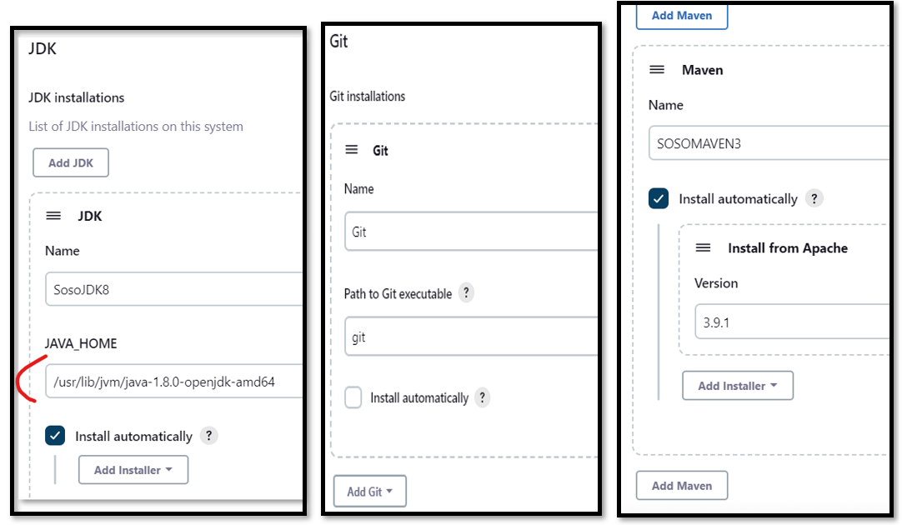
See the SonarQube Configuration image 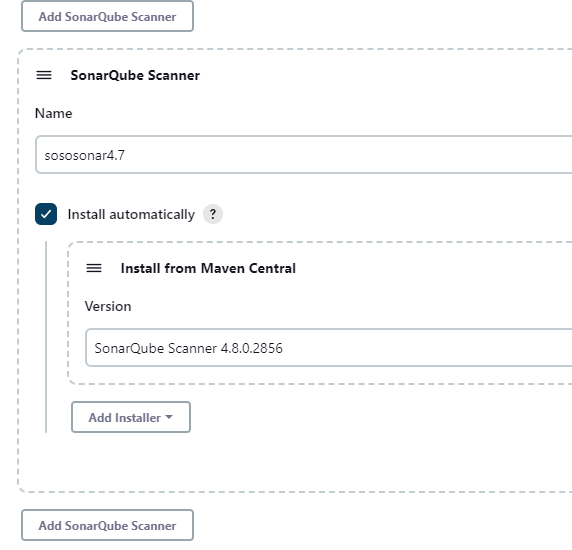
3. Configure Credential
Navigate to: Jenkins UI --> manage Jenkins --> Manage Credentials --> System --> Global credentials
| Services | Credential ID | UserName/Password/secret-text |
|---|---|---|
| DockerHub | sosodockertoken | Username-Password |
| AWS - ECR User | sosoawstoken | UserName/Password |
| MAVEN | ||
| SonarQube | sososonartoken | secret-text |
| Slack | sososlacktoken | secret-text |
| build-trigger | sososshtrigger | SSH Username with Private Key |
In the Jenkins UI: Configure the following credentials
- AWS
- DockerHub --> (generate Token) My account --> security --> secret text
- k8s Config
- sonarqube --> (generate Token) My account --> security --> secret text
Configure AWS USER Credentials for ECR
Create credentials for the username and password for the saved Jenkins user.

Configure Dockerhub Credential(Token)
- Log into your dockerhub account and create username-password --> security: LINK
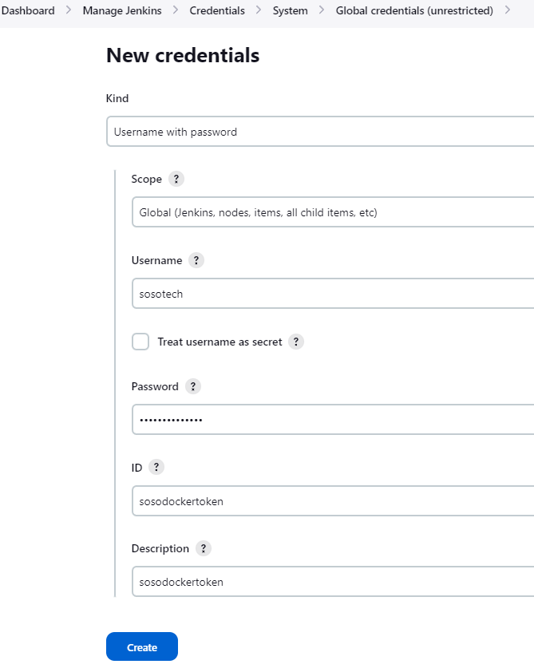
Configure SonarQube Credential(Token)
- Login to the sonarQube UI, go to Myaccount --> security create a Token
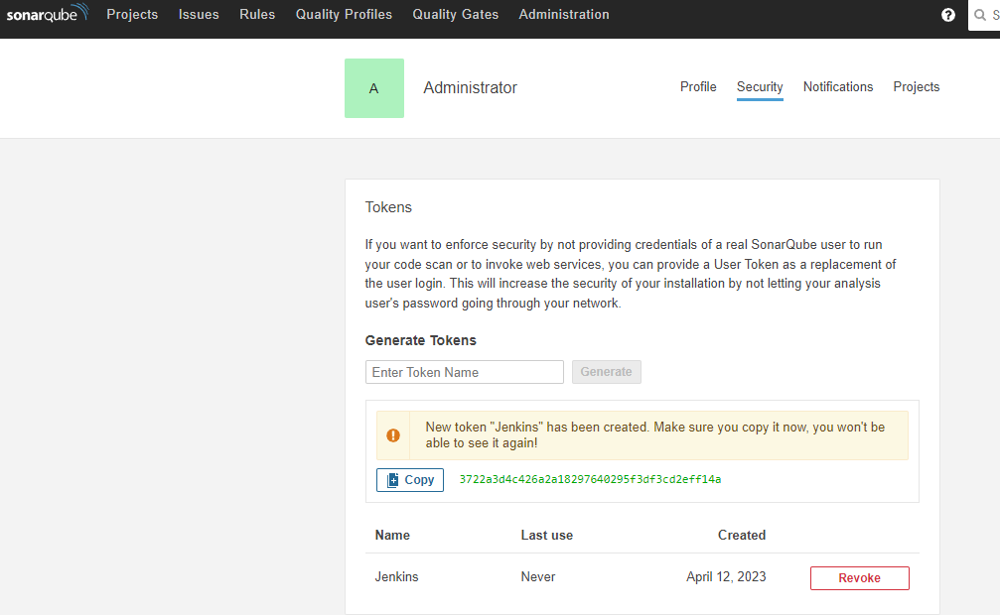 Add a Token
- Add the Token as Credential To jenkins Global credentials
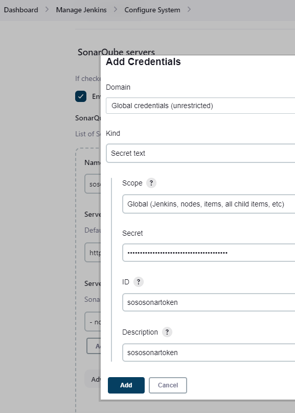
Configure SLACK Credential
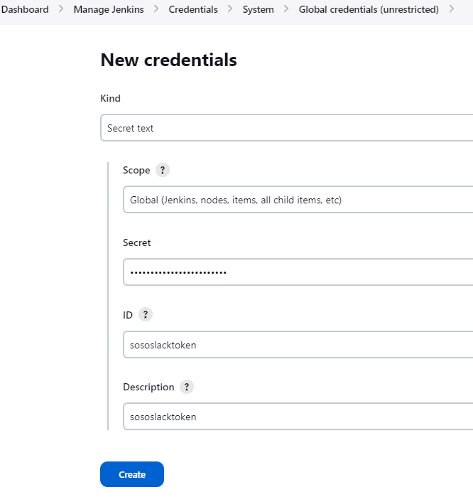
Configure ssh-trigger for Build trigger
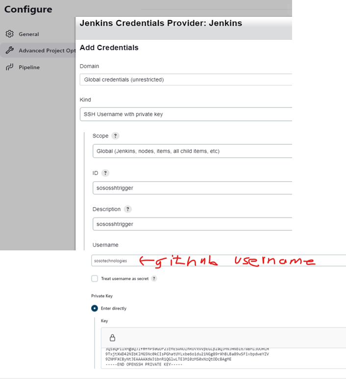
Configure AWS Credential
4. Configure Systems
Navigate to: Jenkins UI --> manage Jenkins --> Configure System
| Services | Configured Names |
|---|---|
| xxx | |
| xxx | |
| Slack | sosotech |
| SonarQube Servers | sososonar |
Configure SonarQube Server
Configure the sonar server in Jenkins uring the SonarQube Public IP and the sonar credentials. 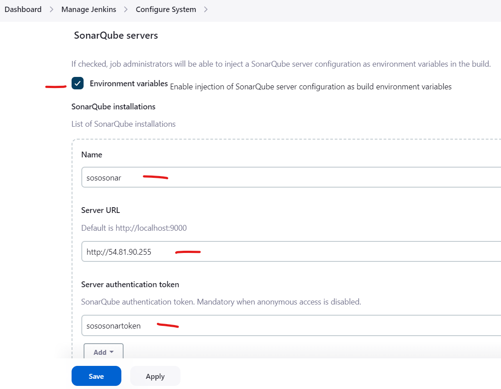
For quality gate and analysis, see the sonarQube section NOTE: Don't forget to add webhooks
Configure TimeStamp
change the timestamp pattern yy-MM-dd_HH-mm as seen in the image:
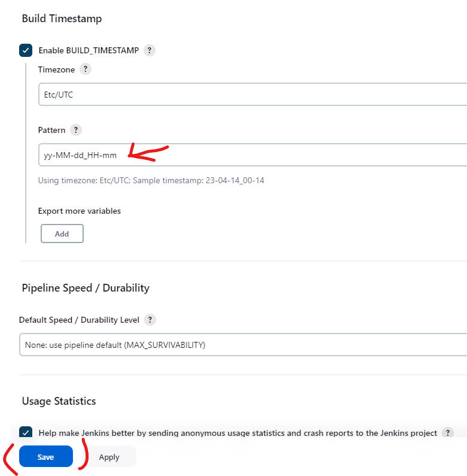
Configure Slack Notification
configure the folloring : - A workspace: sosotech - A Channel(s): sosochannel1
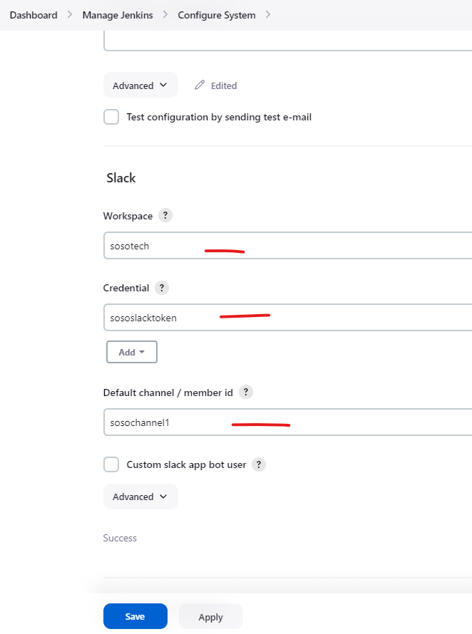
Jenkins Jobs
There are some Jenkins Jobs Demo'd here, like Pipeline, Freestyle:
Freestyle Project
Use this repo: https://github.com/sosotechnologies/cicd-maven.git It's a public repo, so credentials are optional See the image to guide you during setup.
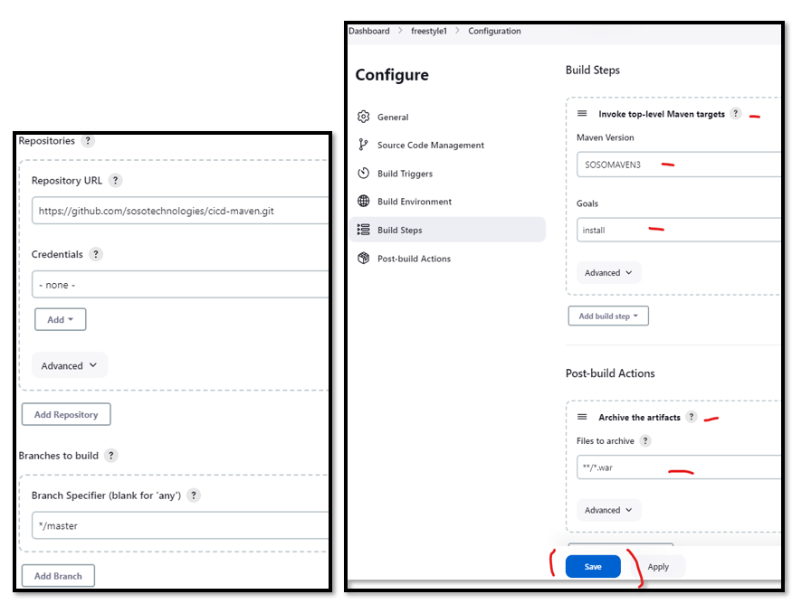
Pipeline
There are 2 Options to use here: - Pipeline script - Pipeline script from SCM - after build check path: /var/lib/jenkins/workspace
Some Sample Pipeline Scripts:
Pipeline1: Jenkins, Maven simple pipeline***
pipeline {
agent any
tools {
maven "SOSOMAVEN3"
jdk "SosoJDK8"
}
stages {
stage('Fetch code') {
steps {
git branch: 'master', url:'https://github.com/sosotechnologies/cicd-maven.git'
}
}
stage('Build'){
steps{
sh 'mvn install -DskipTests'
}
post {
success {
echo 'I think the archieve is All Good...'
archiveArtifacts artifacts: '**/target/*.war'
}
}
}
stage('UNIT TEST') {
steps{
sh 'mvn test'
}
}
}
}
Popeline 2: Jenkins, Maven, Checkstyle, Sonar-Analysis and Quality Gate - pipeline
- Add Sonar security gtoup in the Jenkins server security Group in AWS Console.
- Also, Jenkins security gtoup in the Sonar server security Group in AWS Console.
- Note: In this step os the sonar pipeline you will see this Line of code:
steps { withSonarQubeEnv('sososonar') {
- The sososonar represents the name of the SonarQube Servers in Configure Syatem.
pipeline {
agent any
tools {
maven "SOSOMAVEN3"
jdk "SosoJDK8"
}
stages{
stage('Fetch code') {
steps{
git branch: 'master', url:'https://github.com/sosotechnologies/cicd-maven.git'
}
}
stage('Build') {
steps {
sh 'mvn clean install -DskipTests'
}
post {
success {
echo "I think the archieve is All Good"
archiveArtifacts artifacts: '**/*.war'
}
}
}
stage('Test'){
steps {
sh 'mvn test'
}
}
stage('Checkstyle Analysis'){
steps {
sh 'mvn checkstyle:checkstyle'
}
}
stage('Sonar Analysis') {
environment {
scannerHome = tool 'sososonar4.7'
}
steps {
withSonarQubeEnv('sososonar') {
sh '''${scannerHome}/bin/sonar-scanner -Dsonar.projectKey=sosotech \
-Dsonar.projectName=sosotech \
-Dsonar.projectVersion=1.0 \
-Dsonar.sources=src/ \
-Dsonar.java.binaries=target/test-classes/com/visualpathit/account/controllerTest/ \
-Dsonar.junit.reportsPath=target/surefire-reports/ \
-Dsonar.jacoco.reportsPath=target/jacoco.exec \
-Dsonar.java.checkstyle.reportPaths=target/checkstyle-result.xml'''
}
}
}
stage("Quality Gate") {
steps {
timeout(time: 1, unit: 'HOURS') {
waitForQualityGate abortPipeline: true
}
}
}
}
}
Pipeline 3: Implementing DOCKER ECR
- Create an AWS-ECR repo called: soso-repository
- Build image of webapp and puch to ECR
pipeline {
agent any
tools {
maven "SOSOMAVEN3"
jdk "SosoJDK8"
}
environment {
JenkinsECRCredential = 'ecr:us-east-1:sosoawstoken'
sosoappRegistry = "088789840359.dkr.ecr.us-east-1.amazonaws.com/soso-repository"
sosotechRegistry = "https://088789840359.dkr.ecr.us-east-1.amazonaws.com"
}
stages {
stage('Fetch code'){
steps {
git branch: 'master', url: 'https://github.com/sosotechnologies/cicd-maven-jenkins-ecr.git'
}
}
stage('Test'){
steps {
sh 'mvn test'
}
}
stage('Build App Image') {
steps {
script {
dockerImage = docker.build( sosoappRegistry + ":$BUILD_NUMBER", "./sosotech-Dockerfiles/sosoapp/multistagebuild/")
}
}
}
stage('Upload App Image') {
steps{
script {
docker.withRegistry( sosotechRegistry, JenkinsECRCredential ) {
dockerImage.push("$BUILD_NUMBER")
dockerImage.push('latest')
}
}
}
}
}
}
```
##### Popeline 4: Jenkins, Maven, Checkstyle, Docker, Sonar-Analysis and Quality Gate - pipeline
```Jenkinsfile
pipeline {
agent any
tools {
maven "SOSOMAVEN3"
jdk "SosoJDK8"
}
environment {
JenkinsECRCredential = 'ecr:us-east-1:sosoawstoken'
sosoappRegistry = "088789840359.dkr.ecr.us-east-1.amazonaws.com/soso-repository"
sosotechRegistry = "https://088789840359.dkr.ecr.us-east-1.amazonaws.com"
}
stages {
stage('Fetch code'){
steps {
git branch: 'master', url: 'https://github.com/sosotechnologies/cicd-maven-jenkins-ecr.git'
}
}
stage('Test'){
steps {
sh 'mvn test'
}
}
stage ('CODE ANALYSIS WITH CHECKSTYLE'){
steps {
sh 'mvn checkstyle:checkstyle'
}
post {
success {
echo 'Generated Analysis Result'
}
}
}
stage('build && SonarQube analysis') {
environment {
scannerHome = tool 'sososonar4.7'
}
steps {
withSonarQubeEnv('sososonar') {
sh '''${scannerHome}/bin/sonar-scanner -Dsonar.projectKey=sosotech \
-Dsonar.projectName=sosotech \
-Dsonar.projectVersion=1.0 \
-Dsonar.sources=src/ \
-Dsonar.java.binaries=target/test-classes/com/visualpathit/account/controllerTest/ \
-Dsonar.junit.reportsPath=target/surefire-reports/ \
-Dsonar.jacoco.reportsPath=target/jacoco.exec \
-Dsonar.java.checkstyle.reportPaths=target/checkstyle-result.xml'''
}
}
}
stage("Quality Gate") {
steps {
timeout(time: 1, unit: 'HOURS') {
waitForQualityGate abortPipeline: true
}
}
}
stage('Build App Image') {
steps {
script {
dockerImage = docker.build( sosoappRegistry + ":$BUILD_NUMBER", "./sosotech-Dockerfiles/sosoapp/multistagebuild/")
}
}
}
stage('Upload App Image') {
steps{
script {
docker.withRegistry( sosotechRegistry, JenkinsECRCredential ) {
dockerImage.push("$BUILD_NUMBER")
dockerImage.push('latest')
}
}
}
}
}
}
Pipeline 5: FULL Pipeline***
def COLOR_MAP = [
'SUCCESS': 'good',
'FAILURE': 'danger',
]
pipeline {
agent any
tools {
maven "SOSOMAVEN3"
jdk "SosoJDK8"
}
stages{
stage('Fetch code') {
steps{
git branch: 'master', url:'https://github.com/sosotechnologies/cicd-maven.git'
}
}
stage('Build') {
steps {
sh 'mvn clean install -DskipTests'
}
post {
success {
echo "Now Archiving."
archiveArtifacts artifacts: '**/*.war'
}
}
}
stage('Test'){
steps {
sh 'mvn test'
}
}
stage('Checkstyle Analysis'){
steps {
sh 'mvn checkstyle:checkstyle'
}
}
stage('Sonar Analysis') {
environment {
scannerHome = tool 'sososonar4.7'
}
steps {
withSonarQubeEnv('sososonar') {
sh '''${scannerHome}/bin/sonar-scanner -Dsonar.projectKey=sosotech \
-Dsonar.projectName=sosotech \
-Dsonar.projectVersion=1.0 \
-Dsonar.sources=src/ \
-Dsonar.java.binaries=target/test-classes/com/visualpathit/account/controllerTest/ \
-Dsonar.junit.reportsPath=target/surefire-reports/ \
-Dsonar.jacoco.reportsPath=target/jacoco.exec \
-Dsonar.java.checkstyle.reportPaths=target/checkstyle-result.xml'''
}
}
}
stage("Quality Gate") {
steps {
timeout(time: 1, unit: 'HOURS') {
waitForQualityGate abortPipeline: true
}
}
}
}
post {
always {
echo 'Slack Notifications.'
slackSend channel: '#sosochannel1',
color: COLOR_MAP[currentBuild.currentResult],
message: "*${currentBuild.currentResult}:* Job ${env.JOB_NAME} build ${env.BUILD_NUMBER} \n More info at: ${env.BUILD_URL}"
}
}
}
- Building sosotech documentation site
pipeline {
agent any
environment {
JenkinsECRCredential = 'ecr:us-east-1:sosoawstoken'
sosoappRegistry = "088789840359.dkr.ecr.us-east-1.amazonaws.com/soso-repository"
sosotechRegistry = "https://088789840359.dkr.ecr.us-east-1.amazonaws.com"
}
stages {
stage('Fetch code'){
steps {
git branch: 'main', url: 'https://github.com/sosotechnologies/docs_docker_io.git'
}
}
stage('Build App Image') {
steps {
script {
dockerImage = docker.build( sosoappRegistry + ":$BUILD_NUMBER", "./")
}
}
}
stage('Upload App Image') {
steps{
script {
docker.withRegistry( sosotechRegistry, JenkinsECRCredential ) {
dockerImage.push("$BUILD_NUMBER")
dockerImage.push('latest')
}
}
}
}
}
}
- Building Sosotech Node App
pipeline {
agent any
environment {
JenkinsECRCredential = 'ecr:us-east-1:sosoawstoken'
sosoappRegistry = "088789840359.dkr.ecr.us-east-1.amazonaws.com/soso-repository"
sosotechRegistry = "https://088789840359.dkr.ecr.us-east-1.amazonaws.com"
}
stages {
stage('Fetch code'){
steps {
git branch: 'master', url: 'https://github.com/sosotechnologies/sosojenkins.git'
}
}
stage('Build App Image') {
steps {
script {
dockerImage = docker.build( sosoappRegistry + ":$BUILD_NUMBER", "./dockerhub-nodejs")
}
}
}
stage('Upload App Image') {
steps{
script {
docker.withRegistry( sosotechRegistry, JenkinsECRCredential ) {
dockerImage.push("$BUILD_NUMBER")
dockerImage.push('mkdocss')
}
}
}
}
}
}
Build Triggers
Requirements:
- Set a New private Git Repo
- Set a new ssh Key: ssh-keygen
- Get the content of your id_rsa.pub key: cat ~/.ssh/id_rsa.pub
- Register the id_rsa.pub in Github SSH and GPC Keys
- Get the content of your id_rsa key: cat ~/.ssh/id_rsa
- Register the id_rsa key in Jenkins configure credentials.
My repo is: git@github.com:sosotechnologies/sosojenkinstriggers.git
Add SSH Key to Github Settings
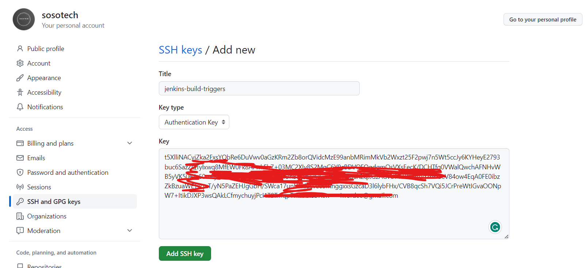
Make a dir mysosotriggers: mkdir mysosotriggers
hello-world/webapp/src/main/webapp/WEB-INF/ Create a Jenkinsfile in mysosotriggers:
cd mysosotriggers
git clone git@github.com:sosotechnologies/sosojenkinstriggers.git
cd sosojenkinstriggers
touch Jenkinsfile
vi Jenkinsfile
Add this into the Jenkinsfile
pipeline {
agent any
stages {
stage('Build') {
steps{
sh 'echo "Looks like the build is Done!"'
}
}
}
}
Create a Pipeline Job like in below photo:
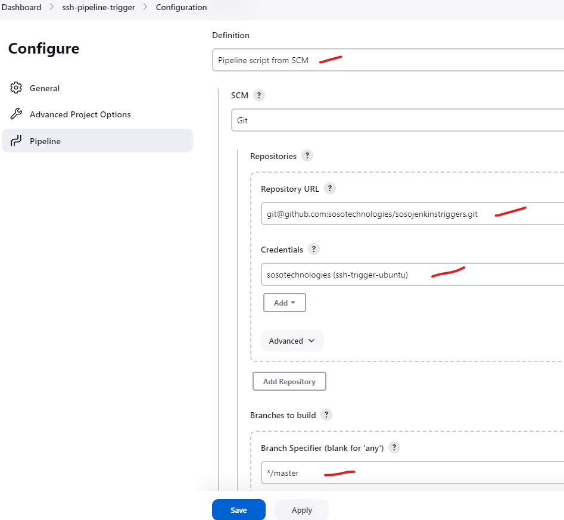
GitHub webHook Jobs
Go to video 163
CICD MicroServices
Docker server
- Ubuntu VERSION="20.04.6 LTS
- Create a New AWS instance. T3 medium
- During instance creation select option [Allow HTTP traffic from the internet]
- Storage should be 20Gb
- Add below script in the user data
#!/bin/bash
# Install Docker
sudo apt-get update
sudo apt-get install \
ca-certificates \
curl \
gnupg \
lsb-release -y
curl -fsSL https://download.docker.com/linux/ubuntu/gpg | sudo gpg --dearmor -o /usr/share/keyrings/docker-archive-keyring.gpg
echo \
"deb [arch=$(dpkg --print-architecture) signed-by=/usr/share/keyrings/docker-archive-keyring.gpg] https://download.docker.com/linux/ubuntu \
$(lsb_release -cs) stable" | sudo tee /etc/apt/sources.list.d/docker.list > /dev/null
# Install Docker-Compose
sudo apt-get update
sudo apt-get install docker-ce docker-ce-cli containerd.io -y
sudo curl -L "https://github.com/docker/compose/releases/download/1.29.2/docker-compose-$(uname -s)-$(uname -m)" -o /usr/local/bin/docker-compose
sudo chmod +x /usr/local/bin/docker-compose
# Add ubuntu user into Docker Group
sudo usermod -a -G docker ubuntu
Clone the repo: Soso-repo
docker-compose build
docker-compose up -d
For docker, see the official docker section in thus doc
If you ever encounter NO SPACE issue when building your image
sudo docker image prune -f && sudo docker container prune -f
Kubernetes
- KOPs
- EKS
- OpenShift
KOPS
- Ubuntu VERSION="20.04.6 LTS
- Installing kOps on Ubuntu
- Install Helm on the Ubuntu server
- install JDK-8 on server
- Create a directory called jenkins-slave in /opt
- Create a New(public) GitHub repo: Mine is: My repo
INSTALL JDK8 On the Jenkins Server In Server terminal, Install Maven and JDK8
sudo apt update
sudo apt install openjdk-8-jdk -y
curl -Lo kops https://github.com/kubernetes/kops/releases/download/$(curl -s https://api.github.com/repos/kubernetes/kops/releases/latest | grep tag_name | cut -d '"' -f 4)/kops-linux-amd64
chmod +x ./kops
sudo mv ./kops /usr/local/bin/
Install Python PiP
sudo apt -y update
sudo apt install python3-pip
Install AWSCli
sudo apt install awscli -y
Install Kubectl
curl -Lo kubectl https://storage.googleapis.com/kubernetes-release/release/$(curl -s https://storage.googleapis.com/kubernetes-release/release/stable.txt)/bin/linux/amd64/kubectl
chmod +x ./kubectl
sudo mv ./kubectl /usr/local/bin/kubectl
Create S3 Bucket
aws s3 ls
aws s3 mb s3://soso-kops-bucket.local
OPTIONAL
aws s3api create-bucket \
--bucket soso-kops-bucket \
--region us-east-1
Add env variables in bashrc
vi .bashrc
export NAME=soso-kops-bucket.k8s.local
export KOPS_STATE_STORE=s3://soso-kops-bucket.local
source .bashrc
Generate an sshkeys before creating cluster
ssh-keygen
Install Cluster preconfig file
kops create cluster \
--name=${NAME} \
--cloud=aws \
--zones=us-west-2a \
--node-size t2.medium \
--master-size t2.medium \
--master-count 1 --node-size t2.medium --node-count=1
Edit the cluster name- OPTIONAL
kops edit cluster --name ${NAME}
Install Cluster
kops update cluster --name ${NAME} --yes --admin
NOTE: WAIT 10 Mins before Checking Nodes and Validating cluster*
Get nodes
kubectl get nodes
Validate Cluster
kops validate cluster --wait 10m
Delete cluster - OPTIONAL
kops delete cluster --name ${NAME}
[OR]
kops delete cluster --name ${NAME} --yes
Make directory /opt/jenkins-slave
sudo mkdir /opt/jenkins-slave
sudo chown ubuntu.ubuntu /opt/jenkins-slave -R
CICD Work Flow - Remove my helm and make your own helm directory in same path
mkdir cicd-k8s
git clone https://github.com/sosotechnologies/cicd-kubernetes-jenkins-pipeline.git
cd
mkdir helm && cd helm
helm create sosotechecharts
replace the yaml files in the template with our yaml files in: cici-kubernetes-jenkins-pipeline/kubernetes/soso-app/templates
cd cici-kubernetes-jenkins-pipeline/helm/sosotechecharts/templates
rm -rf *
NOTE: Set the deployment Image as a variable. Name to what ever but take note of the Name, as this name will be passed as a tag when building the Helm Chart'

Now install the Chart - cd back into the helm directory and run below command - create a namespace called cicd - helm install --namespace cicd [nameof the chart] --set [the deployment variable]=[built image from dockerhub]
kubectl create ns cicd
helm install --namespace cicd soso-helm-name --set sosodeploymentvariable=sosotech/sosowebapp:2
helm list --namerpace cicd
Delete the Chart
helm delete soso-helm-name -n cicd
pipeline {
agent any
/*
tools {
maven "maven3"
}
*/
environment {
registry = "sosotech/docs-repo"
registryCredential = 'sosodockertoken'
}
stages{
stage('BUILD'){
steps {
sh 'mvn clean install -DskipTests'
}
post {
success {
echo 'Now Archiving...'
archiveArtifacts artifacts: '**/target/*.war'
}
}
}
stage('UNIT TEST'){
steps {
sh 'mvn test'
}
}
stage('INTEGRATION TEST'){
steps {
sh 'mvn verify -DskipUnitTests'
}
}
stage ('CODE ANALYSIS WITH CHECKSTYLE'){
steps {
sh 'mvn checkstyle:checkstyle'
}
post {
success {
echo 'Generated Analysis Result'
}
}
}
stage('Building image') {
steps{
script {
dockerImage = docker.build registry + ":$BUILD_NUMBER"
}
}
}
stage('Deploy Image') {
steps{
script {
docker.withRegistry( '', registryCredential ) {
dockerImage.push("$BUILD_NUMBER")
dockerImage.push('latest')
}
}
}
}
stage('Remove Unused docker image') {
steps{
sh "docker rmi $registry:$BUILD_NUMBER"
}
}
stage('CODE ANALYSIS with SONARQUBE') {
environment {
scannerHome = tool 'mysonarscanner4'
}
steps {
withSonarQubeEnv('sonar-pro') {
sh '''${scannerHome}/bin/sonar-scanner -Dsonar.projectKey=vprofile \
-Dsonar.projectName=vprofile-repo \
-Dsonar.projectVersion=1.0 \
-Dsonar.sources=src/ \
-Dsonar.java.binaries=target/test-classes/com/visualpathit/account/controllerTest/ \
-Dsonar.junit.reportsPath=target/surefire-reports/ \
-Dsonar.jacoco.reportsPath=target/jacoco.exec \
-Dsonar.java.checkstyle.reportPaths=target/checkstyle-result.xml'''
}
timeout(time: 10, unit: 'MINUTES') {
waitForQualityGate abortPipeline: true
}
}
}
stage('Kubernetes Deploy') {
agent { label 'KOPS' }
steps {
sh "helm upgrade --install --force vproifle-stack helm/sosotechecharts --set appimage=${registry}:${BUILD_NUMBER} --namespace prod"
}
}
}
}